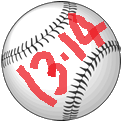
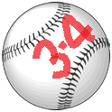

| |
Bristol Indoor Softball League |
| Home | Rules | League | Tournament | Home runs | Scoresheet |
|---|---|---|---|---|---|
| Team | Played | W-(D)-L | Mean PPG |
| Sliders | 2 | 2-0 | 142 |
| Scorgs | 2 | 2-0 | 101 |
| Splitters | 0 | 0-0 | 0 |
| Snowballers | 0 | 0-0 | 0 |
| Creamers | 0 | 0-0 | 0 |
| Minions | 0 | 0-0 | 0 |
| WOX | 2 | 0-2 | 61 |
| Go Balls Deep | 2 | 0-2 | 48 |
| Latest News: 11th Nov 2016 |
| Previous Seasons | |||||||||||||||
|---|---|---|---|---|---|---|---|---|---|---|---|---|---|---|---|
|  | 
|  | |||||||||||||

| |||||||||||||||